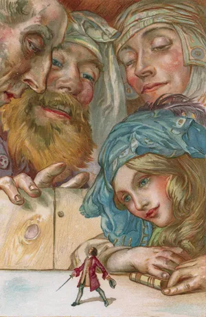

Gulliver’s Travels, four-part satirical work by Anglo-Irish author Jonathan Swift, published anonymously in 1726 as Travels into Several Remote Nations of the World. A keystone of English literature, it is one of the books that contributed to the emergence of the novel as a literary form in English. A parody of the then popular travel narrative, Gulliver’s Travels combines adventure with savage satire, mocking English customs and the politics of the day.
Gulliver's Travels, or Travels into Several Remote Nations of the World. In Four Parts. By Lemuel Gulliver, First a Surgeon, and then a Captain of Several Ships is a 1726 prose satire by the Anglo-Irish writer and clergyman Jonathan Swift, satirising both human nature and the "travellers' tales" literary subgenre. It is Swift's best-known full-length work and a classic of English literature. Swift claimed that he wrote Gulliver's Travels "to vex the world rather than divert it". The book was an immediate success. The English dramatist John Gay remarked, "It is universally read, from the cabinet council to the nursery."
TO PURCHASE,CLICK ON THE LINK:
To buy